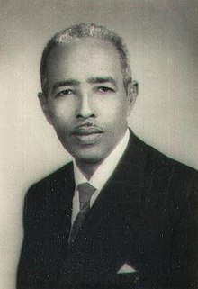

Aden Abdulle Osman Daar
First president of independent Somalia

First president of Somalia.
Here's a time line of Aden Abdulle Osman Daar's life:
- 1908 - Born in Beledweyne, Somalia.
- 1944 - He previously served in the Somali Youth League.
- 1946 - he was named Secretary of the party's section in Beledweyne, Somalia.
- 1951 - the Mudug Regional Council appointed him for the Regional Council.
- 1953 - he became Vice President of the Regional Council.
- 1954 - he was the President of the Somali Youth League.
- 1958 - He was re-elected in May 1958, and he continued to hold this position simultaneously along with that of President of the Legislative Assembly until 1960.
- 1960 - he was elected the country's first President, a position he would assume from 1960 to 1967.
- 1967 - In the 1967 presidential election, Daar was defeated by Abdirashid Ali Shermarke, his former Prime Minister.
- 1990 - with the start of the civil war, Daar along with former Minister of Information Ismail Jim'ale Osoble, former Minister of Education Hassan Ali Mire, and about 100 other Somali politicians signed a manifesto expressing concern over the violence and advocating reconciliation.
- 2007 - Daar died in hospital on June 8, 2007, at the age of 98.